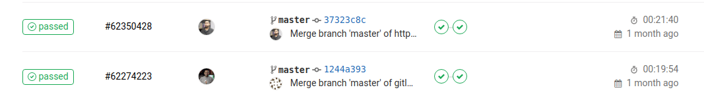
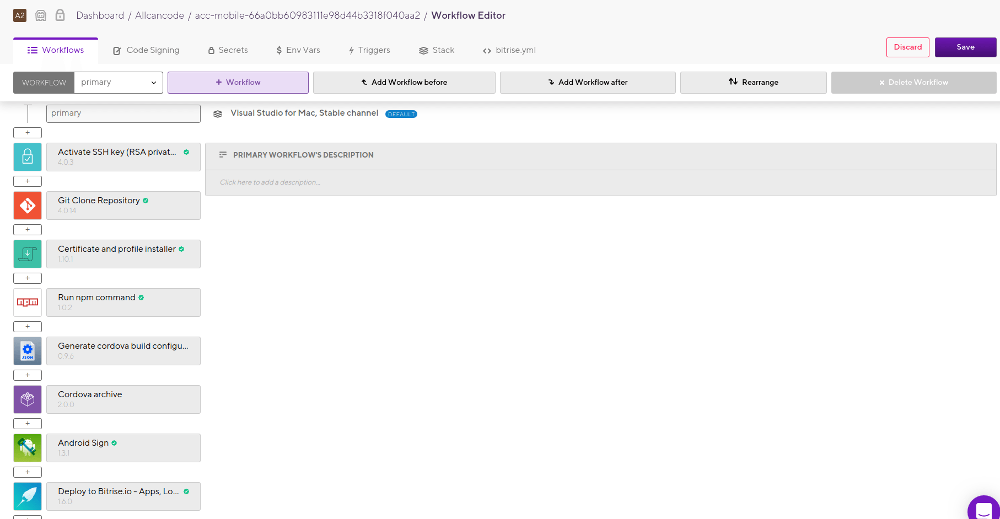

Depoy to Google's App Engine the platform
Running cordova to build native code, singing, and deploying
Approximate time: 40 minutes

describe('Testing platform components', function () {
beforeEach(() => {
cy.visit('http://localhost:4200/projects/32bf5c50050411e8826c116cafab203f/versions/53/components/c843e1b0284011e8ba31cd640de39f04')
cy.wait(5000); // Necessary to avoid slow starts of the webpage
cy.get('input[placeholder="E-mail"]').type('acc_test@allcancode.com{enter}');
cy.get('input[placeholder="Password"]').type('justatest{enter}');
cy.contains('span', 'LOG IN').click();
})
it('should login and create a project', () => {
cy.contains('span', 'Open Project');
cy.contains('mat-card-title', 'allcancode');
cy.contains('mat-card-subtitle', 'Allcancode Core Components');
});
})Just create a .gitlab-ci.yml in your project's root directory
Upon success or failure you are being notified by an email
image: node:latest
job:
before_script:
- apt update
- apt install -y apt-transport-https ca-certificates curl gnupg2 software-properties-common
script:
- cd js_apps
- npm i
- npm testLarge files that are quick to install but slow to download do not benefit from caching
cache:
untracked: true
paths:
- node_modules/
cache:
untracked: true
paths:
- node_modules/
- acc-front/dist/*
stages:
- build
- test
- deploy
build:
stage: build [...]
test_back_end:
stage: test [...]
test_front_end:
stage: test [...]
deploy:
stage: deploy [...]build:
stage: build
image: node:latest
before_script:
- apt-get update
script:
- npm i
- export ACC_VERSION=$(node -pe "require('./package.json')['version']")
- export DEPLOY_URL=$(echo "https://files.allcancode.com/builds/app-files/platform/${ACC_VERSION}/")
- echo ${ACC_VERSION}
- cd acc-front
- rm -rf node_modules/*
- npm i
- node_modules/@angular/cli/bin/ng build --prod --build-optimizer --preserve-symlinks --base-href / --deploy-url ${DEPLOY_URL}
- cd ..test_back_nend:
stage: test
image: node:latest
before_script:
- apt-get update
- apt-get install -y apt-transport-https ca-certificates curl gnupg2 software-properties-common
- curl -fsSL https://download.docker.com/linux/debian/gpg | apt-key add -
- apt-key fingerprint 0EBFCD88
- add-apt-repository "deb [arch=amd64] https://download.docker.com/linux/debian $(lsb_release -cs) stable"
- apt-get update
- apt-get install -y docker-ce
- service docker status || service docker start
- service docker status
script:
- docker run --name redis_instance -p 6379:6379 -d redis redis-server
- docker run --name mongo_instance --restart=always -d -p 27017:27017 mongo mongod
- sh test.shtest_front_end:
stage: test
image: node:latest
before_script:
- apt-get update
- apt-get install -y xvfb libgtk2.0-0 libnotify-dev libgconf-2-4 libnss3 libxss1 libasound2
- npm i --save-dev cypress
script:
- bash cli.sh remote &
- cd acc-front
- bash devrun.sh &
- cd ../
- bash checkRunning.sh
- node_modules/cypress/bin/cypress run --spec cypress/integration/acc-front/login.spec.js
- node_modules/cypress/bin/cypress run --spec cypress/integration/acc-front/projectPage.spec.jsdeploy:
stage: deploy
image: google/cloud-sdk:latest
before_script:
- export ACC_VERSION=$(cat ACC_VERSION)
- export ACC_VERSION=$(echo ${ACC_VERSION} | awk '{print $2}')
- echo ${ACC_VERSION}
- echo $SERVICE_ACCOUNT > /tmp/$CI_PIPELINE_ID.json
- gcloud auth activate-service-account --key-file /tmp/$CI_PIPELINE_ID.json
- gcloud config set project allcancode-platform
after_script:
- rm /tmp/$CI_PIPELINE_ID.json
- rm ACC_VERSION
script:
- export STORAGE_PATH=$( echo "gs://allcancode-files/builds/app-files/platform/${ACC_VERSION}")
- gsutil -m cp -r -z html,css,js acc-front/dist ${STORAGE_PATH}
- gsutil -m setmeta -h "Cache-Control:public, max-age=31536000" ${STORAGE_PATH}/**/*
- gsutil -m acl ch -r -u AllUsers:R ${STORAGE_PATH}/*
- gcloud app deploy app-alpha.yaml --version=v${ACC_VERSION//\./\-} --quietruntime: custom
env: flex
automatic_scaling:
min_num_instances: 3
max_num_instances: 16
cool_down_period_sec: 180
cpu_utilization:
target_utilization: 0.6
resources:
cpu: 1
memory_gb: 1
disk_size_gb: 10
env_variables:
ACC_NODE: "node-P"
NODE_ENV: "production"
liveness_check:
[...]
readiness_check:
[...]FROM gcr.io/allcancode-platform/acc-server-image-3
# COPY Application
COPY . /app/
RUN npm install --unsafe-perm || \
((if [ -f npm-debug.log ]; then \
cat npm-debug.log; \
fi) && false)
# Start the server
CMD npm start
build_acc_front:
stage: build
image: node:11.15.0
cache:
untracked: true
paths:
- acc-front/dist/*
- [...]deploy_to_gcloud:
stage: deploy
image: google/cloud-sdk:latest
only:
- master [...]
test_front:
stage: test
image: node:11.15.0
except:
- master [...]

Before we used Adobe's Phonegap to export cordova projects.
format_version: '7'
default_step_lib_source: https://github.com/bitrise-io/bitrise-steplib.git
project_type: cordova
trigger_map:
- push_branch: "*"
workflow: primary
- pull_request_source_branch: "*"
workflow: primary
workflows:
primary:
steps:
- activate-ssh-key@4.0.3:
run_if: '{{getenv "SSH_RSA_PRIVATE_KEY" | ne ""}}'
- git-clone@4.0.14: {}
- npm@1.0.2:
inputs:
- command: install
- workdir: "$CORDOVA_WORK_DIR"
- cordova-archive@2.0.0:
inputs:
- workdir: "$CORDOVA_WORK_DIR"
- platform: "$CORDOVA_PLATFORM"
- target: device
- sign-apk@1.3.1:
inputs:
- keystore_alias: app
- keystore_url: file://app.jks
- keystore_password: ***
- deploy-to-bitrise-io@1.6.0: {}
app:
envs:
[...]